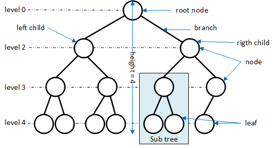
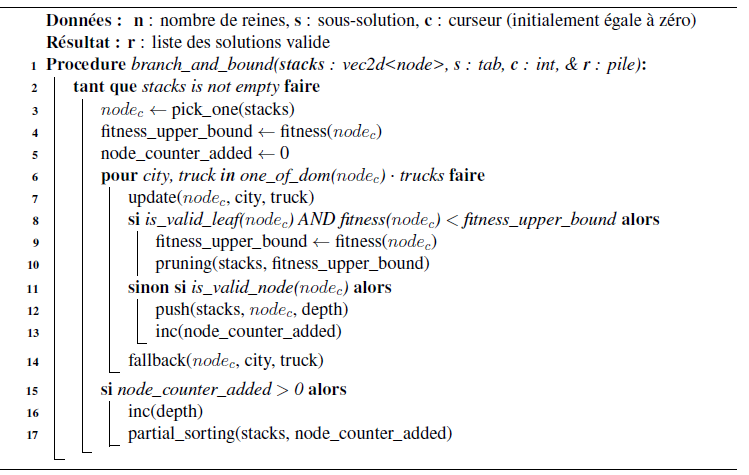
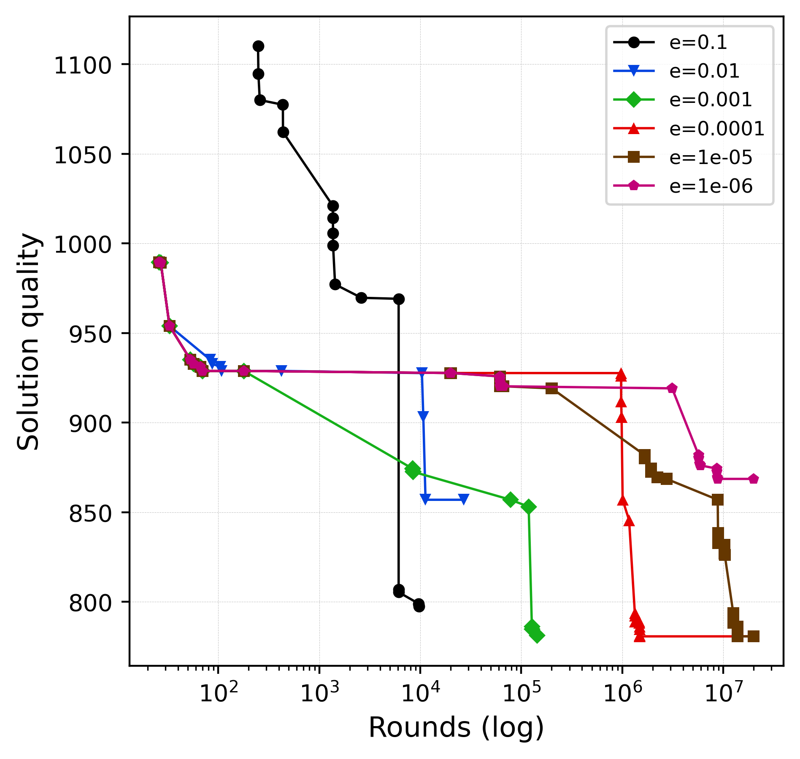
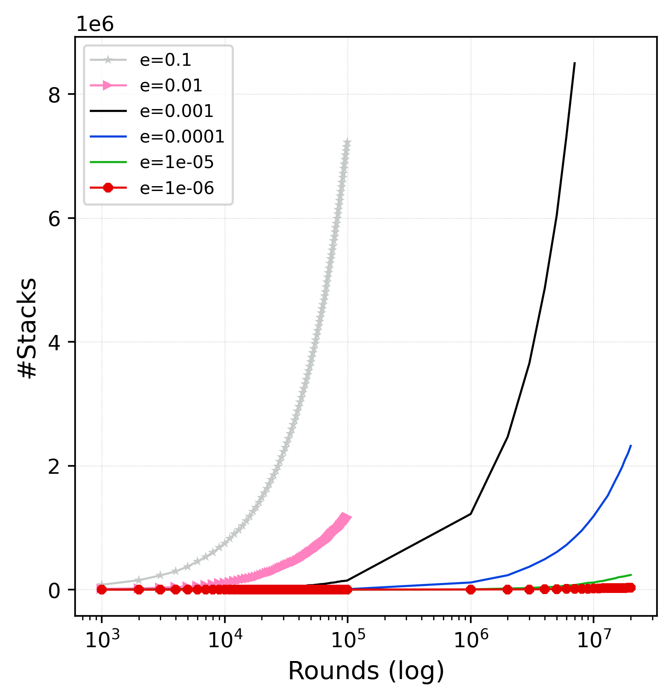
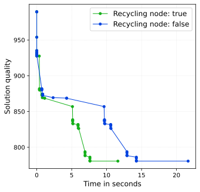
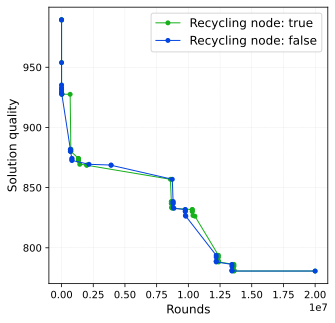

Branch and bound for CVRP#
2023 WIP
We study the design and the performance of branch and bound (B&B) algorithm and these different components related of compromis of exploitation/exploration. To do this, we will use the Capacity Vehicle Routing Problem (CVRP). CVRP is a set of trucks and a deposit, for many trunks start from the deposit and loading according to our maximum capacity to delivery customers in a single trip. It is NP-hard problem and could be studied under the angle as a supply chain problem and/or graph problem in mathematical field.
The gold of this discussion is to present it the key points of the design of the branch and bound algorithm and the impact on performance has solved the problem.
Problem description#
In a real world, CVRP describe a fleet of trucks used to delivery goods to a set of clients from deposit. A company has a limited resources in this case a maximum number of trucks with a limited capacity. If each delivery has a good optimization plan the company save payload, fuel and time of the fleet of trucks.
Objective function (to be minimize):
Subject to:
\(\sum_{j} x_{ij} = 1, \forall i \in {1,...,n}\)
\(\sum_{i} x_{ij} <= 1, \forall j \in {1,...,n}\)
\(\sum_{j} d_j x_{ij} <= Q, \forall i \in {1,...,n}\)
\(\sum_{ij} in {0,1}, \forall i,j \in {0,...,n}\)
where:
\(K\) the number of vehicles,
\(n\) is the number of customers
\(d_j\) is the demand of customer j
\(Q\) is the capacity of a vehicle
\(c_{ij}\) is the cost of traveling from customer i to customer j
\(x_{ij}\) is a binary variable that indicates whether arc (i,j) is in the route
It’s a NP-hard problem, it’s means, he can not be solve in polynomial time (if \(P \neq NP\)). The search space is:
Mirror identification:
An instance is described by city coordinates, truck capacity, demand for each cites and location of the deposit. Instances are available at CVRPLIB, we use the instance A-n32-k5 for all the experiments in this article.
Branch and bound description#
Tree search and search space#
The branch and bound algorithms manipulate tree concept. More precisely, he builds a tree search where each node corresponds to a solution under construction and a valid or not solution leaves. Only a small part leaves are a valid solution (a reminder of the tree terminology fig 1.). The goal is to prune the earliest subtrees that produce lower quality solutions than the upper bound, while also filtering out other subtrees based on problem properties. The earlier the cut occurs in the tree more the search space will be reduced.
{kind=link}

Fig 1. Tree terminologies#
Algorithm design#
To design this algorithm, the important points to take for a good design are:
Representation of the solution or solution coding. The way the solution is represented in memory, the representation may has impact on the solving problem.
Exploration/exploitation (E/E) balance: chose a node in top level of tree is exploration and in bottom level is exploitation. Exploration can use a lot of memory because all the nodes to be need visited are stored in a stack. We need to design a good compromise E/E to explorer search space.
Filtering function: as follow the property of the problem, we cut all branch we know that produce only bad quality solution node pruning method:
Choice of the given structure of the tree: stack, multi-stacks, priority queue etc.
There are two ways to implement the algorithm either iterative or recursive. In recursive the implementation is much easier because the tree is storage in the call stack. However, it is not possible to search and select a particular node in the tree to explore others path. In this last case, an iterative version would be more appropriate. It’s more easily to analyze the structure of the search space tree. We wish to use a data structure for storage and organize nodes of the tree to be explored.
We use the the maximun depth to structure the exploration tree. So we use a stack for each level of depth which allows us to work on nodes of a given depth level so the stacks variable storing a set of stack. And can be used for explorer each level of tree in function of the strategie.
Each node memorizes a stat of the solution depending of the search space. Here the solution coding chose is vector of vector who each vector stores cities that describe a path. For example fig. X, we have….
At each iteration, depending on the exploitation/exploration strategy applied, we pick a node in the stack at specific depth. Then with this node, we visit each child node is visited. Three things cloud be appended in function the status of the node:
if it is a valid leaf and improves the upper bound, we update the new best solution knowing and the upper bound,
if it is a invalid leaf or node, he is rejected,
if it is valid node, this is added in a stack depending on the level depth of for study later these children.
We work with the current node (node\(_c\)) to incrementally generate the children. The update function produces one child following parameters and fallback comes back to the initial state. This way of doing, allows a minimization of computation consumption compared to complete copy and change of the solution. After visiting a node, if we have added nodes in the stack we apply a sort partially on the stack at the current level of depth (partial_sorting). !!! The choice of partially sorted instead of used priority thread because the number of comparison is very small (number of cities available in domain time number of truck) for a partially sorted!!!.
{kind=link}

Fig 2. Branch and bound Algorithm#
We assume that the number of trucks is input data. In fact, find a value for that amounts to solving a bin packing problem (cf. [2] P490-L29).
Path exploration in the tree#
At each iteration, a node is selectected to study the subtree. We suggest different strategies:
take on down strategy (exploitation only): we take a node with maximun depth not yet studying
take on top strategy (exploration only): we take a node with minimum
random strategy: in function of the ratio, we take a node minimun or maximun of depth
WIP constant size of tree strategy: rate of the number of node rejected and the size of the tree.
Experimentation and results#
We use instance A-n32-k5 for all experiments.
Baseline#
Solution quality in function of the time
Exploitation/Exploration strategies#
We look for three strategies
Policy take a node from the stack: EE equilibration vs. exploitation
exploitation/exploration and impact of memory
The random strategie need to tune the parameter of the exploration rate.


Dynamic stacks#
Stack evolution by depth level#

Fig 3. Dynamic stacks#
Recycling of node_ptr impact#
The way to implement the branch and bound have an impact on the performance in particular the allocator/deallocator of data when is not necessary and a good handle memory.
When a node is visited a new children nodes are created and there are put in the stack for visited later.
The visit parent node will be erased. It’s possible to keep the data structure and reused this storage for a new node.
It allows you to avoid to use the allocator/deallocator mecanisme which give a gain of the significatily a cosommation time.


In function of the time in right and rounds in left with the pick_one strategie is random (exploration_rate=0.00001)#
Discussion#
This article discute mainly, how implement the branch and bound in the sequence context. We saw the main mechanisms how conduct the search to find a good solution are the sort queue of the nodes and a good balance exploration versus exploitation.
We can adapt this algorithm for a parallel paradigm to exploit the multi-core architecture.
Refs#
x
Paolo Toth, Daniele Vigo-2000-Models, relaxations and exact approaches for the capacitated vehicle routing problem